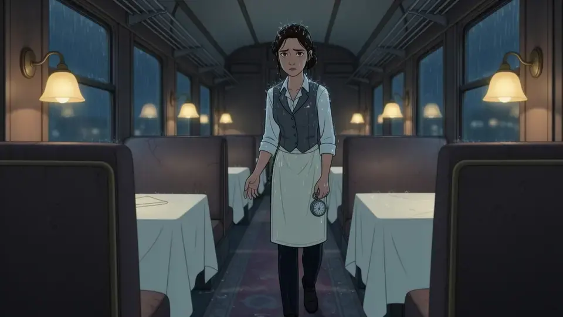

<div class="pv-peca" data-peca-nome="botao-principal-com-selo"><button type="button" title="Reserva até 59 créditos" class="cartao-gerador-gerar" data-peca="1"><svg class="oricon still" width="16" height="16" viewBox="0 0 24 24" fill="none" stroke="currentColor" stroke-width="1.5" stroke-linejoin="round" stroke-linecap="round" aria-hidden="true"><path d="M1.2 7.6 7.6 15.6l2.6-1.1Z"></path><g class="wing2"><path d="M2.2 21.5 7.6 15.6h2.6l5.4 3.4Z"></path><path d="M2.2 21.5 15.6 19"></path></g><path d="M10.2 15.6 12.7 13.3l2.9 3.9.7 3.8-2.1-1.4"></path><path d="M16.3 21 18.6 13l.9-.6 3.8 3-3.6-.6-3.1 6.2"></path><g class="wing"><path d="M10.9 14.6 11.1 11 19.9 2.5l-.5 10.2"></path><path d="M19.9 2.5 14.5 15"></path></g></svg><span class="cartao-gerador-gerar-t">Animar 3C de novo · #2.0</span><span class="cartao-gerador-preco"><span class="v2-c selo-preco" data-creditos="48" data-reserva="59" title="≈ 48 · reserva até 59 créditos. O saldo precisa cobrir a reserva enquanto gera; o débito é o custo real."><span class="moeda" aria-hidden="true"></span><span aria-hidden="true">48</span><span class="so-leitor">≈ 48 · reserva até 59 créditos</span></span></span></button></div><div class="pv-peca" data-peca-nome="botao-secundario"><button type="button" class="btn g sm sbn-check" aria-expanded="false" data-peca="1"><svg class="oricon still" width="16" height="16" viewBox="0 0 24 24" fill="none" stroke="currentColor" stroke-width="1.5" stroke-linejoin="round" stroke-linecap="round" aria-hidden="true"><path d="M1.2 7.6 7.6 15.6l2.6-1.1Z"></path><g class="wing2"><path d="M2.2 21.5 7.6 15.6h2.6l5.4 3.4Z"></path><path d="M2.2 21.5 15.6 19"></path></g><path d="M10.2 15.6 12.7 13.3l2.9 3.9.7 3.8-2.1-1.4"></path><path d="M16.3 21 18.6 13l.9-.6 3.8 3-3.6-.6-3.1 6.2"></path><g class="wing"><path d="M10.9 14.6 11.1 11 19.9 2.5l-.5 10.2"></path><path d="M19.9 2.5 14.5 15"></path></g></svg> Conferir continuidade<span class="v2-c selo-preco" data-creditos="13" data-reserva="27" title="≈ 13 · reserva até 27 créditos. O saldo precisa cobrir a reserva enquanto gera; o débito é o custo real."><span class="moeda" aria-hidden="true"></span><span aria-hidden="true">13</span><span class="so-leitor">≈ 13 · reserva até 27 créditos</span></span></button></div><div class="pv-peca" data-peca-nome="chip"><button type="button" class="chipb fmt-ep-chip" aria-haspopup="dialog" aria-expanded="false" title="Formato do episódio" data-peca="1"><svg width="20" height="20" viewBox="0 0 20 20" fill="none" stroke="currentColor" stroke-width="1.6" aria-hidden="true"><rect x="1" y="4.9375" width="18" height="10.125" rx="2.5"></rect></svg><span class="num">16:9</span></button></div><div class="pv-peca" data-peca-nome="seletor-de-modo"><button type="button" role="switch" class="modeswitch" aria-checked="false" aria-label="Modo avançado do storyboard" data-peca="1"><span class="ms-l on" data-lado="basico" aria-hidden="true">Modo Básico</span><span class="ms-track" aria-hidden="true"><span class="ms-knob"></span></span><span class="ms-l" data-lado="avancado" aria-hidden="true">Modo Avançado</span></button></div><div class="pv-peca" data-peca-nome="cartao-de-take"><li data-live="shot:3A" class="sbn-frame" data-peca="1"><button type="button" class="sbn-media" aria-pressed="false" aria-label="Selecionar a 3A: Lia entra no vagão vazio, molhada de chuva"></button><div class="sbn-ov"><span class="v2-code">3A</span><span class="sbn-glass">Plano geral · 5 s</span></div><div class="sbn-ovr"><span class="pill ok"><svg width="16" height="16" viewBox="0 0 24 24" fill="none" stroke="currentColor" stroke-width="2.4" stroke-linecap="round" stroke-linejoin="round" aria-hidden="true"><path d="M5 12.5l4.5 4.5L19 7.5"></path></svg>Aprovado</span><button type="button" class="sbn-glass sbn-x" aria-label="Ver a 3A maior"><svg width="15" height="15" viewBox="0 0 24 24" fill="none" stroke="currentColor" aria-hidden="true" stroke-width="2.2" stroke-linecap="round" stroke-linejoin="round"><path d="M14 4h6v6M10 20H4v-6M20 4l-7 7M4 20l7-7"></path></svg></button></div><p class="sbn-what" title="Lia entra no vagão vazio, molhada de chuva">Lia entra no vagão vazio, molhada de chuva</p></li></div><div class="pv-peca" data-peca-nome="campo-com-mencao"><div class="campo-mencoes" data-peca="1"><div class="campo-mencoes-caixa"><textarea id="movimento-3C" maxlength="6000" rows="4" spellcheck="false" aria-label="Movimento da tomada" placeholder="Descreva só o movimento: o que muda entre o primeiro e o último instante. Digite @ para citar um ingrediente" class="cartao-gerador-campo" aria-autocomplete="list" style="">Dante fala com ela sem desviar o olhar. Em quadro: @Lia e @Dante. Lugar: @Vagão-restaurante. Uma ação contínua, do começo ao fim da tomada, sem corte.</textarea><div class="campo-mencoes-realce" aria-hidden="true" style="font-family: Geist, &quot;Helvetica Neue&quot;, Arial, sans-serif; font-size: 14px; font-weight: 400; font-style: normal; line-height: 20.3px; letter-spacing: normal; word-spacing: 0px; text-indent: 0px; text-transform: none; tab-size: 8; padding: 12px 12px 8px; border-width: 0px; box-sizing: border-box; top: 0px; left: 0px; width: 286px; height: 104px;"><span>Dante fala com ela sem desviar o olhar. Em quadro: </span><mark class="campo-mencoes-marca citada">@Lia</mark><span> e </span><mark class="campo-mencoes-marca citada">@Dante</mark><span>. Lugar: </span><mark class="campo-mencoes-marca citada">@Vagão-restaurante</mark><span>. Uma ação contínua, do começo ao fim da tomada, sem corte.
</span></div></div></div></div><div class="pv-peca" data-peca-nome="origami-loading"><div class="oriload" role="status" aria-live="polite" data-peca="1"><svg class="planeflight" viewBox="0 0 400 190" preserveAspectRatio="xMidYMid slice" aria-hidden="true"><path class="planeflight-rastro" d="M60 96 C60 34 196 30 200 96 S340 162 344 96 S204 30 200 96 S60 158 60 96 Z" fill="none" stroke-width="1.4" stroke-linecap="round" pathLength="100" stroke-dasharray="0.1 2.2 0.1 2.2 0.1 2.2 0.1 2.2 0.1 2.2 0.1 79"></path><g><g transform="translate(200 96) rotate(-20)"><g class="planeflight-aviao" transform="rotate(45) translate(-13 -13) scale(1.1)" stroke-width="1.2" stroke-linejoin="round" stroke-linecap="round"><path class="planeflight-asa" d="M21.5 2.5 2.5 10.5 9 13Z"></path><path class="planeflight-corpo" d="M21.5 2.5 9 13l7 7.5Z"></path><path class="planeflight-asa" d="M9 13l.5 6 2.8-2.4Z"></path></g></g></g></svg><div class="oriload-t"><b>Origami desenhando…</b><div class="bar indet"><i></i></div><small class="oriload-d">Costuma levar cerca de 2 min com este modelo</small></div></div></div><div class="pv-peca" data-peca-nome="seletor-de-cena"><div class="sbn-scenes" data-peca="1"><div class="scenesel"><button class="btn g icon" aria-label="Cena anterior"><svg width="16" height="16" viewBox="0 0 24 24" fill="none" stroke="currentColor" aria-hidden="true" stroke-width="2.4" stroke-linecap="round" stroke-linejoin="round"><path d="m15 6-6 6 6 6"></path></svg></button><div class="popwrap"><button data-live="scene:3" class="selbtn" aria-expanded="false" aria-haspopup="listbox"><span class="tech sel-n" style="font-size: var(--fs-sm);"><span class="sel-long">Cena </span>3<span class="sel-long"> de </span><span class="sel-short">/</span>8</span><span class="sel-name">Mesa 4</span><svg class="chev" width="14" height="14" viewBox="0 0 24 24" fill="none" stroke="currentColor" aria-hidden="true" stroke-width="2.4" stroke-linecap="round" stroke-linejoin="round"><path d="m6 9 6 6 6-6"></path></svg></button></div><button class="btn g icon" aria-label="Próxima cena"><svg width="16" height="16" viewBox="0 0 24 24" fill="none" stroke="currentColor" aria-hidden="true" stroke-width="2.4" stroke-linecap="round" stroke-linejoin="round"><path d="m9 6 6 6-6 6"></path></svg></button></div></div></div>